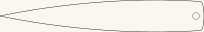
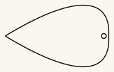
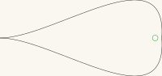
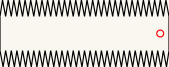

Bullroarer — five blade profiles
A bullroarer is a flat blade on a cord. Whirled overhead, it spins about its own long axis while it circles, and the alternating faces chop the air into a pulsing roar. The pitch follows how fast you swing it; the shape of the blade decides how readily it spins and how much of the sound is roar rather than whistle.
Five profiles, all cut-ready. They differ only in outline — every one is a single closed cut with one 7mm cord hole.
Get the files
- Everything as a ZIP — all five profiles.
- Repository — if you want to change a profile or read the geometry.
- Or click any picture below to download that one cut file.
Released under CC0 1.0 — do what you like with them, no attribution needed. Built for LaserMadeMusic.
The rest of the build files — every instrument, generator and tool, indexed.
The five profiles
Click any of these to download the cut file. The pictures are display renderings — the cut files draw a hairline on no background at all, which a browser shows almost invisibly, so these are thickened and painted onto a light ground and cropped to the part. Green, orange and cyan are darkened in the picture — at full strength they are too pale to read against a light ground. The cut file keeps the exact values. Each is shown at its own scale, so the sizes below are the ones that matter, not how large the picture looks.
 |
 |
|
| Rectangular · 200 × 42mm | Convex narrow tapered · 204 × 33mm | Convex tapered · 151 × 89mm |
 |
 |
|
| Concave tapered · 200 × 95mm | Sawtooth · 169 × 68mm |
{kind=link}
{kind=link}
{kind=link}
{kind=link}
{kind=link}
What the files contain
Measured out of the files themselves, not copied from whatever drew them:
| Profile | Blade | Cord hole | Hole centre |
|---|---|---|---|
BullroarerRectangular.svg | 200.0 × 42.1mm | 7mm | 10.6mm from the near end |
BullroarerConvexNarrowTapered.svg | 204.3 × 32.9mm | 7mm | 8.0mm from the blunt end |
BullroarerConvexTapered.svg | 150.5 × 89.3mm | 7mm | 7.3mm from the round end |
BullroarerConcaveTapered.svg | 200.3 × 94.6mm | 7mm | 8.5mm from the round end |
BullroarerSawtooth.svg | 169.2 × 67.6mm | 7mm | 8.8mm from the near end |
Every cord hole sits on the blade's long centreline. That is not decoration: a hole off the centreline makes the blade spin unevenly and the roar stutters.
Each file is cropped to the blade itself, so the sheet is the outline. Output is millimetre-true — 1 user unit = 1 mm with a physical width/height — so it prints and cuts at real size.
Colour is the cut order
Colour is the cut order, and it is the same in every LaserMadeMusic repository: blue engraves, then green → orange → cyan → black. Black is always the last cut, the one that frees the part; violet means skip and is never cut. A file uses only the stages it needs. There is no engrave layer here, and only two of the four cut stages are used.
| Colour | What | Why then | |
|---|---|---|---|
| 1 | green #00ff00 | the cord hole | while the blade is still whole |
| 2 | black #000000 | the outline | frees the blade, so it goes last |
Give both an explicit operation. A per-colour job silently skips any colour you leave unmapped — leave green out and you get a blade with nothing to hang it on.
Before you cut
Cut these in 3mm Baltic birch plywood — that is what they are built in. It matters more than the profile does: a bullroarer has to survive being whirled hard on a cord, and the blade is the part that fails. Ply can delaminate and a knot can split out through the cord hole, so run the face grain along the blade rather than across it. Baltic birch earns its place here for its void-free core; a cheaper ply with voids is a weak blade waiting to find them.
Two or more laminations may be needed for the best sound. Cut the same profile twice or three times and glue the copies face to face. A single 3mm blade is light, and a bullroarer's note comes from a blade with enough mass to keep spinning against the air rather than being pushed about by it — thicker gives a fuller roar and a steadier one. It also puts more material around the cord hole, which is where a single sheet tears out. Line the holes up when you glue, and keep the laminate symmetric about the centreline so the blade still spins true.
The cord is not in these files. Neither is any advice on it, because the right cord is a function of your blade's mass and how hard you intend to swing. A swivel between cord and blade is worth considering: without one the cord twists up as the blade spins.
Handle it with care
A bullroarer is a weight on the end of a string, and it behaves like one. Mass, speed and shape all work against you here, and the lamination advice above makes the first of them worse — that is the trade you are making for a better sound.
Mass. The plain rectangular blade is about 17g in a single 3mm thickness, 34g laminated twice and 52g three times (Baltic birch at roughly 680 kg/m³). The larger profiles are heavier again. That is a small stone, and it is travelling.
Speed. On a metre of cord at two or three turns a second, the blade is moving on the order of 10 to 20 metres per second — cyclist's pace, at the end of a line you cannot stop quickly. The cord stores that energy and gives it all back if the blade catches something.
Shape. Three of the five profiles come to a point, and the sawtooth has a row of teeth down both long edges. A spinning edge does not need to be sharp to cut, and these are not blunt.
So: swing it outdoors, in a clear circle several metres across, with nobody inside that circle. Check the cord and the knot before every session — the cord hole is where a blade fails, and it fails at full speed. Wear eye protection while you are learning how far it actually reaches. It is loud on purpose, so mind ears as well as heads.
Files
Bullroarer*.svg | the five cut-ready profiles |
previews/ | display renderings — not cut files |
index.md · index.html | this page; the markdown is the source |